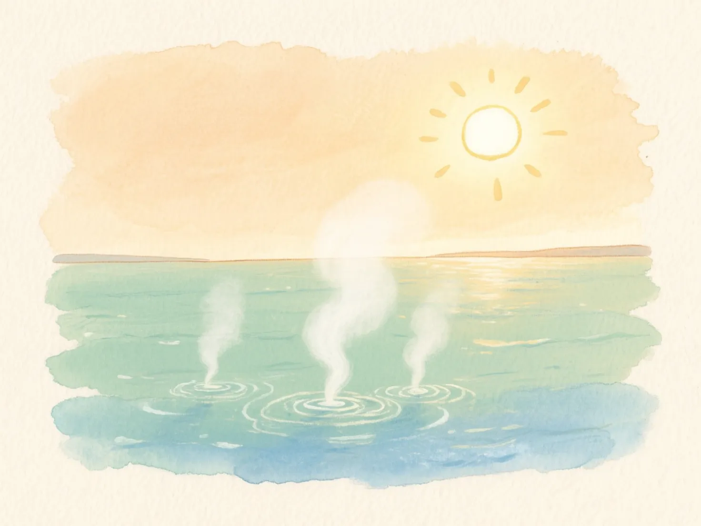
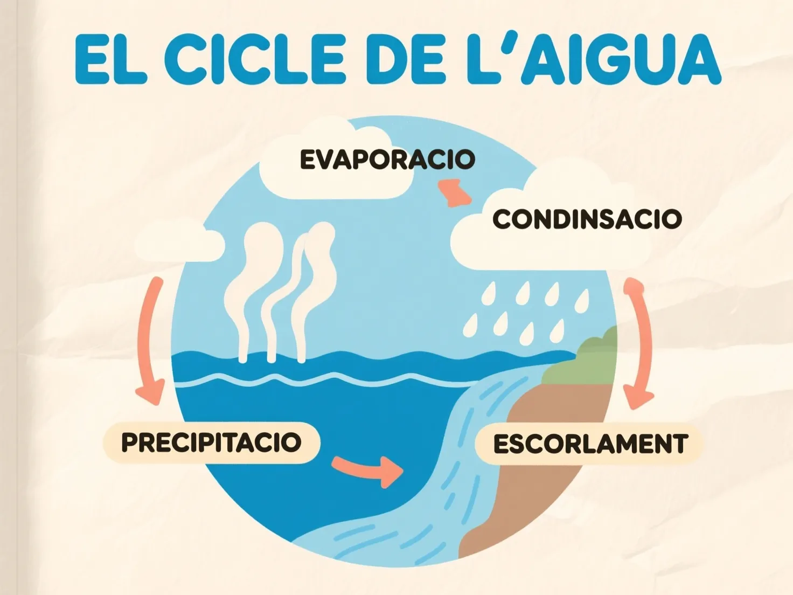

soft watercolor storybook illustration, gentle wet-edge washes, warm palette of ochre sap green and dusty blue, hand-drawn feel, cozy lighting, loose brushwork, paper texture background, children book aesthetic. A warm morning sun shining over a calm sea, water vapour rising gently from the surface towards the sky, three-quarter view, eye-level, soft horizon line. single clear focal point, clean composition, soft cream background. No text, no letters.

Per comparar directament amb FLUX-schnell: obre el report de la iteracio 2 a qwen_20260421_221651/report.html (mateix estil spine, mateix subjecte).
Educational textbook infographic poster showing the water cycle with four clearly labeled stages. The labels are written in Catalan in clean readable typography: 'EVAPORACIO' above the sea with rising vapour, 'CONDENSACIO' above the clouds, 'PRECIPITACIO' next to the falling rain, and 'ESCOLAMENT' next to a river flowing back to the sea. Arrows connect the four stages in a circular flow. Flat editorial vector illustration, soft pastel palette of blues and creams, clean geometric shapes, bold outlines, title 'EL CICLE DE L'AIGUA' at the top in large letters. Soft cream paper background.

Veredicte: avalua si el text es llegible i correcte. Errors tipografics comuns de Qwen-Image: falta accent (EVAPORACIO en lloc d'EVAPORACIO), lletres duplicades, ordre invertit en paraules poc frequents.